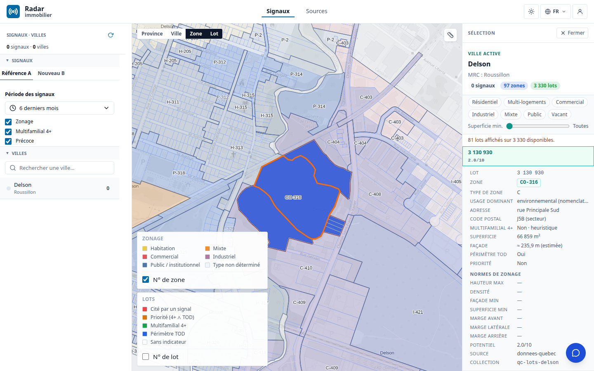
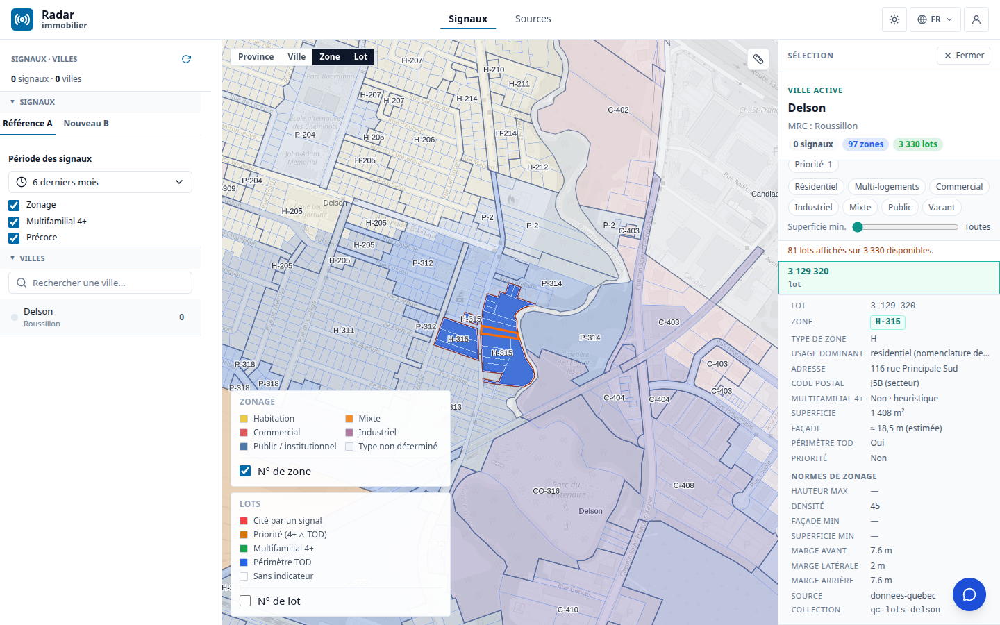
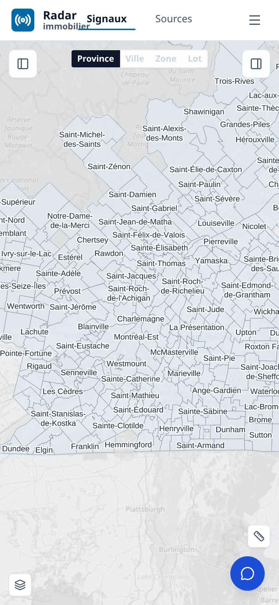
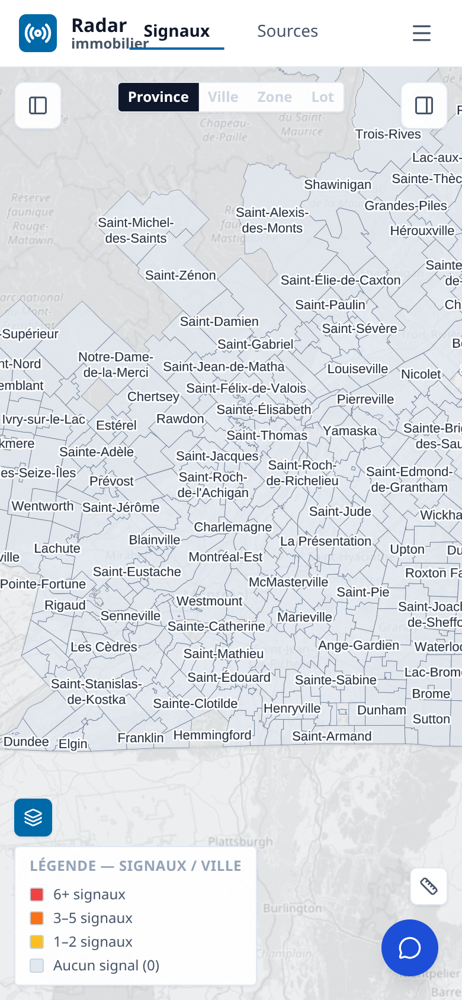

Période étudiée : 2026-07-13 → 2026-08-09
Statut : rapport de période final — périmètres IMMO et GEO.
Périmètre de mesure : livraisons de la fenêtre ; état Track, production IMMO et catalogue OGC
GEO [effectif — mesures du 2026-08-09] ; photographie qualité GEO [effectif —
2026-07-25]. Les métriques antérieures non remesurables sans accès authentifié sont conservées
uniquement comme baselines datées.
Note de lecture — effectif vs projeté. Chaque chiffre est qualifié : [effectif] = mesuré réellement sur les données ou le code à une date donnée ; [projeté] = extrapolation crédible mais non encore réalisée ; [en attente] = dépend d'une donnée ou d'une livraison externe identifiée et demandée. Aucune métrique n'est présentée comme acquise si elle ne l'est pas. Les mesures reposent sur des commandes bornées et reproductibles, documentées en annexe.
Le radar propose désormais une chaîne de décision lisible dans une même expérience : signal → preuve → zone → lot → décision client. L'utilisateur part d'un fait réglementaire, en vérifie le contexte, choisit une zone puis un lot en deux clics et conserve la zone active pendant l'examen parcellaire. Le retrait du score « Potentiel x.x/10 », qui n'était pas fondé sur les caractéristiques du lot, évite qu'une précision d'interface soit confondue avec une évaluation démontrée. La carte Signaux est aussi utilisable sur petit écran : fil centré sur une ligne, légendes repliées et outil de mesure accessible.
Cette expérience n'est crédible que si les couches GEO qui la portent sont qualifiées. La présence canonique mesurée atteint 29/30 villes Focus et 868/1104 villes provinciales en zonage, 30/30 et 1102/1104 en lots, ainsi que 29/30 et 596/1104 pour les collections de normes [effectif — API GEO, 2026-08-09]. Ces nombres attestent une couche servie, pas sa complétude réglementaire, son bon millésime ni sa preuve exacte.
Deux bancs E2E, deux questions différentes.
- Couverture : Focus 30 vs Province ≈1104. Le banc vérifie si les couches nécessaires sont présentes. Les deux périmètres restent distincts et ne sont jamais additionnés. Ses limites principales sont la qualité variable des grilles et de leur millésime, l'absence de données de propriétaire gouvernées et l'écart entre présence d'une collection et complétude réelle.
- Profondeur : ~33 témoins vs >5000 ville×signal. Les ~33 opportunités témoins [effectif — banc de référence] éprouvent la chaîne signal → document → zone → grille → lot ; >5000 couples ville×signal [projeté] en représentent l'échelle visée. Ses limites sont la provenance exacte encore incomplète et le rappel/précision signal↔zone non remesuré sur toute la fenêtre.
| Limite | Banc principalement touché | Lecture correcte |
|---|---|---|
| Qualité variable des grilles et de leur millésime | Couverture | Une collection de normes présente ne prouve pas que chaque norme est complète, en vigueur et rattachée au bon lot. |
| Provenance exacte encore incomplète | Profondeur | La jointure de provenance existe largement, mais la preuve exacte v2 reste non évaluée ou incomplète à l'échelle du portefeuille. |
| Rappel/précision signal↔zone non remesuré sur la fenêtre | Profondeur | La dernière baseline comparable demeure datée du 2026-06-29 ; aucun gain de période n'est revendiqué. |
| PV, signaux et citations non remesurés sur la production authentifiée | Les deux | Les valeurs de juillet restent des baselines datées, avec TODO de remesure ; aucun chiffre courant n'est inféré. |
| Aucune donnée de propriétaire livrée | Couverture | Acquisition, base légale et gouvernance restent [en attente]. |
| Présence d'une collection ≠ complétude réglementaire | Couverture | Les comptes OGC mesurent la présence canonique, pas le contenu, la fraîcheur ou la valeur juridique. |
| ~33 témoins ≠ généralisation | Profondeur | L'échelle >5000 ville×signal demeure [projeté]. |
Les couches restent distinctes : le PV est le substrat documentaire ; un signal est une extraction ; le zonage et les lots sont des géométries servies ; la grille porte les normes ; la réconciliation et la preuve relient ces couches. Le tableau ne les additionne jamais.
| Couche (finalité) | Focus 30 | Province ≈1104 | Statut |
|---|---|---|---|
| PV scrapés — substrat documentaire | 27/30 | ~1007/1104 | [effectif — baseline 2026-07-02, hors fenêtre] ; à remesurer |
| Signaux extraits — faits réglementaires | 25/30 | 978/1104 | [effectif — baseline 2026-07-02, hors fenêtre] ; à remesurer |
| Signaux à citation vérifiable | 56/70 | — | [effectif — baseline 2026-07-02, hors fenêtre] ; à remesurer, cible 100 % |
| Zonage servi — collection canonique présente | 29/30 | 868/1104 | [effectif — API GEO 2026-08-09] ; présence, pas complétude |
| Grilles/normes servies — collection canonique présente | 29/30 | 596/1104 | [effectif — API GEO 2026-08-09] ; qualité et millésime à qualifier |
| Lots servis — collection canonique présente | 30/30 | 1102/1104 | [effectif — API GEO 2026-08-09] ; austin et saint-marc-du-lac-long absents |
| Signaux désignant une zone | 14/30 | — | [effectif — baseline 2026-07-02, hors fenêtre] ; à remesurer |
| Consistance signal↔zone — rappel | ~60 % (28/47) | 59,2 % (71/120, 55 villes) | [effectif — dernière mesure 2026-06-29, hors fenêtre] ; à remesurer |
| Données nominatives | — | — | [en attente] — acquisition et gouvernance non livrées |
| Aires TOD | à mesurer sur la cohorte canonique | 4/39 cas applicables complets | [effectif — snapshot GEO 2026-07-25] ; reliquat [en attente] |
Attention au vocabulaire GEO. Certains artefacts du dépôt GEO emploient aussi le nom
focus30pour une cohorte de recette différente. Tous les chiffres « Focus 30 » de ce rapport utilisent exclusivement la cohorte canonique Radar :priorityRank <= 30, villes non exclues.
TODO — remesure authentifiée. Mesurer PV, signaux, citations et références de zone depuis la production avec un jeton de rapport non consigné dans le dépôt. Tant que ce jeton n'est pas disponible, conserver les baselines datées ci-dessus.
TODO — recette signal↔zone. Mesurer rappel et précision sur un même snapshot servi avec la commande Track/Make ratifiée pour WP5. Aucun target
makecanonique n'étant exposé dans la baseline courante, ne pas substituer un script ad hoc à cette recette.
La navigation ferme un problème d'usage central : lorsqu'un utilisateur choisit une zone puis un lot, la zone ne disparaît plus du contexte. Deux gestes lisibles suffisent — sélectionner la zone, puis le lot — et le panneau conserve les deux niveaux d'information. La carte devient le point de jonction visible entre le zonage GEO et l'objet parcellaire [effectif — PR #499 fusionnée, build servi vérifié].

Recette de la navigation en deux clics : le lot est sélectionné à l'intérieur de la zone, dont le contour et le contexte restent actifs. Cette capture de la séquence de recette précède le retrait distinct du score « Potentiel », documenté ci-dessous.
Cette évolution s'inscrit dans les quatre surfaces du radar :
Ces changements sont [effectif — code fusionné dans la fenêtre]. Leur recette fonctionnelle exhaustive reste [projeté] ; le WP5 Recette est à 1/9 (11 %) [effectif — mesure Track du 2026-08-09].

Fiche lot après retrait du score non fondé : les attributs disponibles et les normes de zonage restent visibles, sans note synthétique artificielle.
Le retrait du score « Potentiel x.x/10 » ferme une dette de confiance : un nombre précis ne doit pas suggérer une évaluation parcellaire lorsque ses composantes ne sont pas établies. Le produit gagne ici par une règle simple : ce qui n'est pas fondé n'est pas affiché comme décision [effectif — PR #500 fusionnée].
Cette règle rejoint la méthode du rapport : une donnée présente reste distincte d'une donnée complète ; une projection reste [projeté] ; une dépendance externe reste [en attente].
| Commandes repliées | Légende ouverte |
|---|---|
 |
 |
| Fil Province → Ville → Zone → Lot centré ; mesure en bas à droite. | La légende des signaux s'ouvre à la demande. |
La carte conserve son fil de navigation sur une seule ligne, centre l'étape active, replie les légendes derrière une icône et maintient l'outil de mesure en bas à droite. L'information demeure accessible sans recouvrir en permanence la carte [effectif — PR #501 fusionnée].
Le connecteur MCP interroge GET /api/graph-signals/:city, le même flux que l'application,
sous l'identité de l'utilisateur. Cette livraison ferme le risque de présenter dans l'assistant
un jeu de signaux différent de celui vu dans le radar [effectif — PR #371 et #372 fusionnées,
code et tests].
TODO — parité authentifiée. Avec un compte de recette, vérifier qu'une même ville retourne le même ensemble d'identifiants de signaux dans l'application et par
search_signals. Cette mesure exige un jeton utilisateur et ne doit pas être simulée avec des fixtures.
Les trois évolutions d'interface correspondent aux PR #499, #500 et #501. Le fichier
build.json de la production retourne le SHA court e27baeb, associé à la dernière de ces
livraisons [effectif — mesure du 2026-08-09]. Cette provenance relie le comportement visible
à une révision précise ; elle ne remplace ni la recette E2E authentifiée sur toutes les vues ni
la remesure des données protégées.
La contribution GEO de la période ne se résume pas à davantage de collections. Elle rend plus explicites trois états auparavant faciles à confondre : servi, réconcilié et prouvé.
La mesure exacte par slug canonique sur l'API GEO donne :
| Couche (finalité) | Focus 30 | Province ≈1104 | Statut |
|---|---|---|---|
| Zonage — trouver la géométrie d'une zone | 29/30 | 868/1104 | [effectif — 2026-08-09] |
| Lots — localiser la parcelle | 30/30 | 1102/1104 | [effectif — 2026-08-09] |
| Normes — disposer d'une collection canonique | 29/30 | 596/1104 | [effectif — 2026-08-09] ; contenu à recetter |
Cette couverture permet au produit de demander des couches cohérentes par ville. Elle ne permet pas encore d'affirmer qu'une norme est la bonne norme en vigueur pour chaque lot. Le niveau de lecture est donc : capacité de service acquise, qualité réglementaire encore hétérogène.
La photographie portefeuille GEO du 25 juillet complète la présence par une mesure de qualité sur son univers opérationnel propre de 1106 municipalités :
Le dénominateur 1106 appartient à ce snapshot GEO. Il n'est jamais additionné ni substitué au périmètre client ≈1104 ; il sert à qualifier la profondeur de la donnée.
Encadré — finalité v2.3 → v3.4. La v2.3 impose qu'un signal publiable soit relié à une citation vérifiable. La fondation v3.4 vise à rendre la provenance rejouable, à préserver les propriétés métier au fil des transformations et à séparer une sortie candidate de son application. Ces garanties existent dans le code et les tests [effectif] ; leur généralisation à la province reste [projeté].
Le cas Brossard a produit un graphe MATCHED avec 23 événements stockés dans S3
[effectif — livraison du 2026-08-07]. Ce cas confirme la capacité sur un exemple borné ; il
ne suffit pas à réviser les totaux de signaux, qui n'ont pas été remesurés sous authentification.
La chaîne de valeur doit répondre à cinq questions : quel signal, dans quel document et à quel passage, pour quelle zone, avec quelle grille, et sur quel lot ? La période a renforcé les contrats de provenance, les événements de désignation et les contrôles de publication. Elle n'a pas encore produit une nouvelle mesure comparable du rappel et de la précision à l'échelle de la fenêtre.
La dernière référence signal↔zone reste donc datée du 29 juin : 71/120 = 59,2 % sur 55 villes et ~60 % sur le proxy Focus [effectif — hors fenêtre]. La photographie du 25 juillet montre en parallèle que la preuve exacte v2 n'est encore complète pour aucune municipalité du portefeuille GEO. Ce zéro qualifie un contrôle non satisfait ou non évalué ; il ne signifie pas « aucune donnée utile ».
Le volume servi n'est donc plus le seul goulot. Pour franchir le banc de profondeur, il faut mesurer la correspondance signal↔zone sur un snapshot stable, vérifier la citation et le millésime, puis démontrer le rattachement zone → grille → lot sur les témoins avant de généraliser.
lile-dorval ne possède pas de collection canonique de zonage ni de normes
[effectif — 2026-08-09].austin et saint-marc-du-lac-long ne possèdent pas de collection canonique de lots
[effectif — 2026-08-09].Le Track est la colonne vertébrale du décompte. Le programme porte 92 éléments faits sur 176, soit 52 % [effectif — mesure du 2026-08-09]. Les workpackages les plus directement liés au présent rapport montrent des maturités différentes :
| Workpackage | Finalité | Avancement cumulé |
|---|---|---|
| WP1 — DATA | Sources et substrat | 17/22 (77 %) [effectif] |
| WP2 — EXTRACTION | Signaux et ontologie | 9/19 (47 %) [effectif] |
| WP4 — RÉCONCILIATION & PREUVE | Signal, zone, citation, lot | 14/21 (67 %) [effectif] |
| WP5 — RECETTE | Mesure et parité avec la référence | 1/9 (11 %) [effectif] |
| WP6 — PRODUIT | Application radar client | 21/44 (48 %) [effectif] |
| WP7 — PLATEFORME & DÉPLOIEMENT | Service et CD | 16/25 (64 %) [effectif] |
Ces ratios sont cumulatifs et ne constituent pas un débit de la période. La fenêtre contient
256 des 800 événements Track [effectif]. Elle compte aussi 95 PR fusionnées dans Radar
[effectif] et 1668 commits sur geo/origin/main [effectif]. Ces volumes établissent la
provenance de l'activité ; ils ne mesurent pas la valeur client, décrite par les capacités et les
limites ci-dessus.
Sur la période, Radar Immobilier a gagné en crédibilité d'usage : la chaîne signal → preuve → zone → lot devient une expérience client réellement navigable, l'interface retire une note parcellaire non justifiée et la carte reste praticable sur mobile. La donnée GEO est servie beaucoup plus largement qu'elle n'est encore prouvée, mais cette différence est désormais nommée et mesurable.
La suite ne consiste donc pas à présenter le volume comme une fin. Elle consiste à fermer la recette sur les ~33 témoins [effectif — banc de référence], puis à démontrer la généralisation vers >5000 ville×signal [projeté] avec les mêmes exigences de citation, de zone, de grille, de lot, de provenance et de millésime.
Commandes de lecture du journal partagé :
track report
track report --wp
track report --decisions
track report --since 2026-07-13 --until 2026-08-09 --wp --decisions --format json
Résultats cités : baseline 43c873e0d2cf, 92/176, neuf workpackages, 256/800
événements dans la fenêtre et aucune décision structurée en attente
[effectif — 2026-08-09].
gh pr list --repo rhanka/radar-immobilier --state merged --search 'merged:2026-07-12..2026-08-10' --limit 200 --json number,mergedAt,mergeCommit,title
gh pr view 499 --repo rhanka/radar-immobilier --json number,title,mergedAt,mergeCommit
gh pr view 500 --repo rhanka/radar-immobilier --json number,title,mergedAt,mergeCommit
gh pr view 501 --repo rhanka/radar-immobilier --json number,title,mergedAt,mergeCommit
curl -fsSL https://immo.sent-tech.ca/build.json
Le décompte de 95 PR [effectif] utilise les timestamps mergedAt bornés à la journée de
Toronto : du 2026-07-13T04:00:00Z au 2026-08-10T03:59:59.999Z.
Source de la cohorte :
packages/radar-sources/src/geo/municipalities.qc.json. La mesure correspond exactement le slug
canonique aux collections qc-zonage-<slug>, qc-lots-<slug> et
qc-zonage-norms-<slug>.
Le filtre Focus doit impérativement être :
select(.excluded != true and .priorityRank != null and .priorityRank <= 30)
Le test explicite de null évite d'inclure Montréal et Laval par coercition jq. Résultats
[effectif — 2026-08-09] : 3883 collections au total ; zonage 29/30 et
868/1104 ; lots 30/30 et 1102/1104 ; normes canoniques présentes 29/30 et
596/1104.
Photographie qualité et historique cités :
git -C /home/antoinefa/src/geo show origin/main:work/coverage/portfolio-report-history/20260725.json
git -C /home/antoinefa/src/geo rev-list --count --since='2026-07-13 00:00:00 -0400' --until='2026-08-10 00:00:00 -0400' origin/main
Le snapshot qualité utilise un univers GEO de 1106 municipalités. Ses ratios restent attachés à ce dénominateur et ne sont jamais additionnés aux valeurs du périmètre Radar ≈1104.
Les valeurs PV, signaux, citations, signal↔zone et parité « 4+ » proviennent du rapport du
2 juillet : docs/spec/reports/study-2026-07/report.md. Elles servent uniquement de
comparaison datée et ne constituent pas des livraisons acquises entre le 13 juillet et le
9 août.